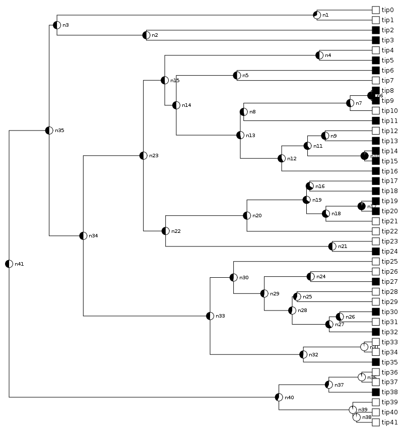

Usage¶
When running PieTree, you provide it with
- an input data file, containing the Newick-formatted tree and a list of the tip and node states
- optionally (but likely), some options for formatting the image output
If no input is provided, a usage message will be printed summarizing the available options:
$ PieTree
usage: PieTree.py [-h] [--version] [--treefile TREEFILE] [--optfile OPTFILE]
[--outformat {pdf,ps,svg,png}] [--shape {rect,radial}]
... and a bunch more options
Quick start¶
A sample tree file with a binary character, called tree2.ttn, is included. To use it (adjust paths as necessary):
$ PieTree --treefile PieTree/examples/tree2.ttn
created pietree.pdf
The result, in the file pietree.pdf, looks like this:
Input tree file¶
The tree data file contains the tree structure itself and the character states of its tips and nodes.
- Tree structure: A Newick string. If node states will be used, nodes as well as tips should be labeled in this string. This line must come before the character state lines.
- Tip states: One line for each tip, giving its name and the number corresponding to its character state.
- Node states: One line for each node, giving its name and the probability of it being in each possible state.
- Comments: Lines beginning with # will be ignored.
This is best illustrated with a small example:
# the Newick tree string, with tips and nodes labeled
((tipA:1, tipB:1)node1:2, tipC:3)node2;
# tip states, either 0 or 1 for a binary trait
tipA 1
tipB 1
tipC 0
# node states, with one value for each of the two possible states
node1 0.2 0.8
node2 0.5 0.5
The tree string must be specified first. The order of the lines for the tip and node states doesn’t matter. The tip and node names must not contain spaces, and they must match those in the tree string. The names and states must be separated by whitespace (of any kind).
I use the extension .ttn for files formatting like this, which stands for “trees, tips, nodes”. Such files can easily be constructed by hand or by script. I’ve included an example of how to perform ancestral state reconstructions and generate a .ttn file, using the R package diversitree:
Specifying options¶
Plotting options may be specified on either the command line or in a separate file. Elsewhere is a List of All Options. The example here will use the options treefile (the name of the input tree and character state file), shape (for either a rectangular or circular tree image), and colorX (the color of state X, where X is 0, 1, 2, etc.).
Command line¶
On the command line, the name of an option is preceded with --, and its value comes immediately after it, separated by a space or by =. Extending the example above:
$ PieTree --treefile PieTree/examples/tree2.ttn --shape=radial
The color of each state is specified as an RGB triple, where each component is given a value between 0 and 1. On the command line, this string must be surrounded by quotes. For more details, see Note on RGB colors. For example, to make state 0 be red:
$ PieTree --treefile PieTree/examples/tree2.ttn --color0 "(1, 0, 0)"
Option file¶
When specifying a lot of options, it can be easier to put them all into a separate file. In such a file, the first line must be [pietree], and then each option is on its own line, with the option name separated from its value by either = or :. For example:
[pietree]
treefile = PieTree/examples/tree2.ttn
shape = radial
color0 = (1, 0, 0)
color1 = (0, 0.75, 0.75)
Suppose that file is called opt.pie. Then to use it:
$ PieTree --optfile opts.pie
When the same argument is provided on both the command line and in the options file, the command line value takes precedence. For example, with the options file above, this produces a rectangular tree:
$ PieTree --optfile opts.pie --shape rect
More options¶
There are many more options for tweaking the look of a tree: